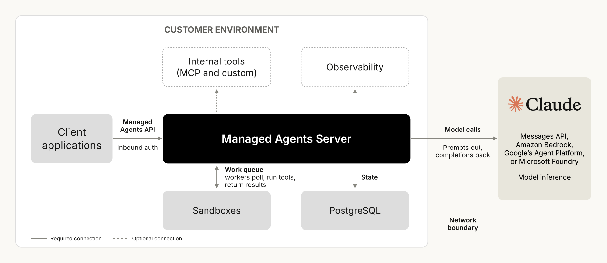

셀프 호스팅 Claude Managed Agents를 소개합니다. 이제 자체 클라우드든 온프레미스든, 여러분의 환경에서 에이전트를 실행할 수 있습니다. 에이전트, 자격 증명(credentials), 세션 기록을 직접 호스팅하고, Claude로 보내는 요청이 어디로 갈지도 직접 선택합니다.
셀프 호스팅 Claude Managed Agents(Self-hosted Claude Managed Agents)가 이제 비공개 베타(private beta)로 제공됩니다. 개발자는 회사의 코드와 내부 시스템에서 직접 일하는 에이전트를 만들고, 그 에이전트를 자체 환경에서 실행할 수 있습니다.
셀프 호스팅은 자율 에이전트를 구축하고 배포하기 위한 조합형(composable) API 모음인 Managed Agents를 실행하는 새로운 방식입니다. Managed Agents는 장시간 실행되는 에이전트를 프로덕션에 올리는 데 필요한 에이전트 하네스(harness), 샌드박스(sandbox), 자격 증명 처리, 세션 기록을 제공합니다.
저희는 처음에 Managed Agents를 Claude Platform의 호스팅 서비스로 출시했고, 이때는 Anthropic이 인프라를 대신 운영합니다. 코드를 자체 환경 안에 두어야 하는 팀을 위해서는 셀프 호스팅 샌드박스(self-hosted sandboxes)를 추가했습니다.
그 이후 에이전트는 더 유능해졌고, 깨진 빌드 고치기, 릴리스 테스트, 알림 분류(triage), 버그 백로그 처리처럼 더 중요한 일을 맡고 있습니다. 에이전트는 사람의 감독 없이 여러분의 코드 위에서 실행되며, 내부 시스템에 접근해야 합니다. 그 정도의 접근 권한을 가진 에이전트라면, 일부 팀은 샌드박스만이 아니라 서비스 전체를 자체 환경에 두기를 원합니다. 지금까지는 그러려면 플랫폼을 직접 만들어야 했습니다.
셀프 호스팅 Managed Agents에서는 하네스, 샌드박스, 자격 증명, 세션 기록을 포함해 서비스의 모든 부분이 여러분의 클라우드나 온프레미스에서 실행됩니다. 여러분이 Managed Agents 서버와 그 데이터베이스, 그리고 에이전트가 셸·파일 도구를 실행하는 워커(worker)를 운영합니다. 모델 요청은 여러분이 정한 곳으로 갑니다. Anthropic으로 직접 보내도 되고, 클라우드 제공업체(Amazon Bedrock, Google의 Agent Platform, Microsoft Foundry)나 자체 게이트웨이로 보내도 됩니다. 개발자는 여전히 호스팅형 Managed Agents 서비스와 같은 핵심 API로 에이전트를 만듭니다.
세션 기록은 여러분의 데이터베이스에 저장됩니다. 조직이 Anthropic과 제로 데이터 보존(zero data retention, ZDR)을 맺고 있다면, Claude로 보내는 요청에도 다른 Messages API 호출과 똑같이 ZDR이 적용됩니다.

에이전트가 사람의 감독 없이 여러분의 코드와 시스템 안에서 실행될 때는 사람이 모든 단계를 확인하리라 기대할 수 없으므로, 한계(limits)가 시스템 자체에 내장되어 있어야 합니다. 그래서 에이전트 보안은 아키텍처에서 시작하며, 저희가 Managed Agents를 네 가지 원칙을 중심으로 설계한 이유도 여기에 있습니다. 이 원칙은 Anthropic이 모든 것을 호스팅하든, 여러분이 샌드박스만 호스팅하든, 서비스 전체를 호스팅하든 똑같이 적용됩니다.
하네스(두뇌)는 Claude를 호출하고, 샌드박스(손)는 에이전트의 코드가 실행되는 곳입니다. 둘은 설계상 분리되어 있습니다. 에이전트의 코드는 샌드박스에서 실행되고, 에이전트 루프, 세션 기록, 볼트(vault) 비밀 값은 샌드박스 밖에 머뭅니다. 둘을 분리하면 에이전트가 하나의 샌드박스가 전체 실행 내내 살아남는 데 의존하지 않게 되고, 샌드박스는 도구가 필요로 할 때만 시작되며, 세션 기록은 샌드박스 밖에 이벤트 로그로 존재합니다.
볼트(Vaults)는 자격 증명을 샌드박스 밖에 두도록 설계되었습니다. MCP 도구와 지원되는 API 호출의 경우, 샌드박스 밖의 프록시가 요청에 자격 증명을 추가합니다. 셀프 호스팅 Managed Agents에서는 자격 증명을 자체 비밀 관리 도구(secrets manager)에 저장할 수도 있습니다.
각 환경을 허용된 호스트 목록으로 제한할 수 있고, 그 밖의 호스트로 가는 요청은 차단됩니다. 깨진 빌드를 고치는 에이전트라면 그 목록은 git 호스트와 패키지 레지스트리뿐일 수 있습니다. 샌드박스를 직접 호스팅할 때는 같은 제한을 자체 방화벽에서 설정합니다.
Managed Agents는 에이전트가 수행한 모든 단계의 기록을 남깁니다. 여기에는 에이전트가 한 도구 호출과 그 결과가 포함됩니다. 이 기록은 OpenTelemetry로 내보낼 수 있으므로, 이미 쓰고 있는 모니터링 도구로 보내 나머지 시스템과 함께 에이전트 활동을 검토할 수 있습니다.
셀프 호스팅 Claude Managed Agents는 현재 비공개 베타로 제공됩니다. 접근을 요청하려면 Anthropic 계정 팀에 문의하거나, 자세한 내용은 문서(docs)를 참고하세요.